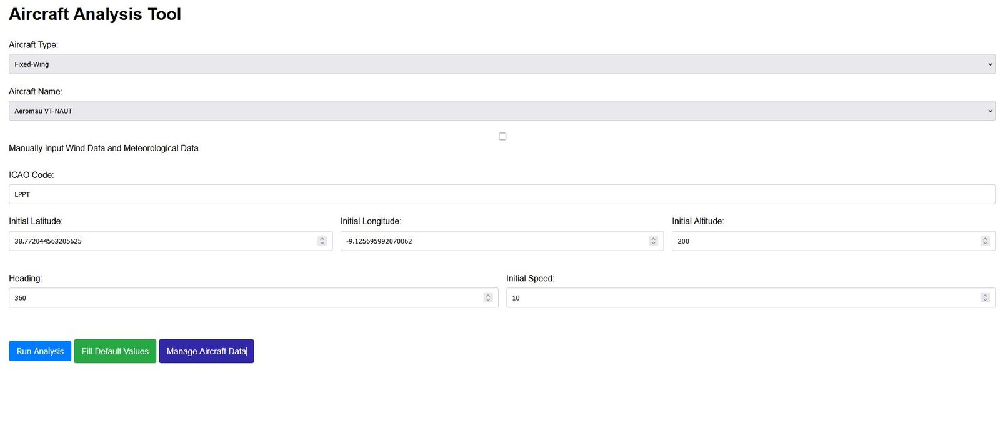
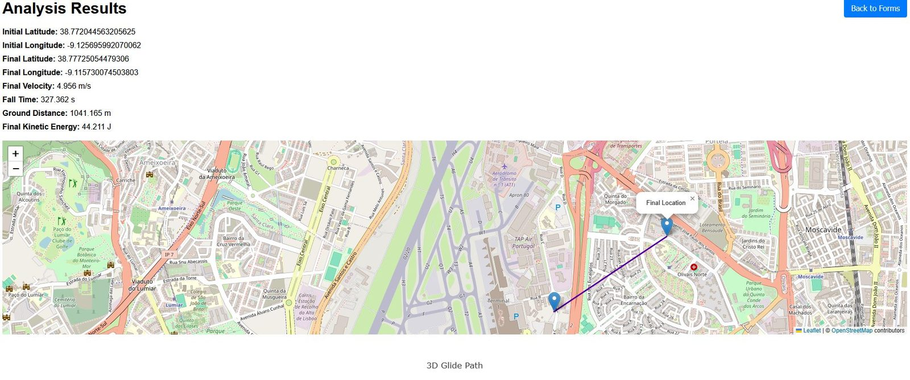
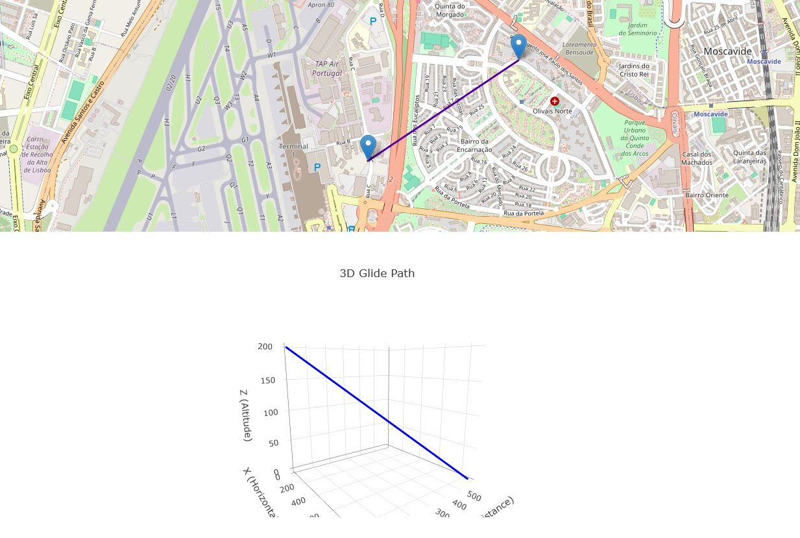
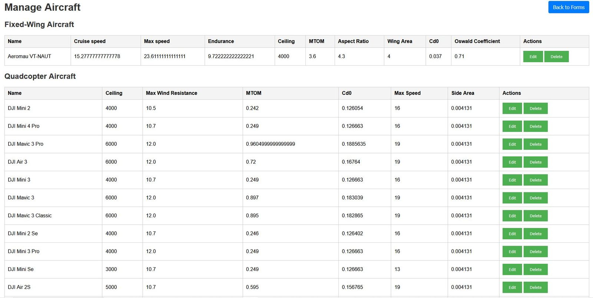

Where does a drone land after it fails?
At ANAC I built aerodynamic models that predict UAS trajectories after a critical failure, and turned them into a tool certification engineers can use without writing a line of code.
What I did
Post-failure trajectory models
Aerodynamic failure models for 8+ commercial UAS, computing ballistic trajectories and ground-impact zones with drag, lift and mass properties.
Simulation tool for engineers
An interactive HTML-based interface so certification engineers can assess safety parameters with no programming knowledge.
European UAS landscape
Market analysis of the European UAS sector, identifying trends, certification gaps and emerging regulatory challenges.
Certification framework
Technical analysis and documentation supporting ANAC's UAS certification framework, aligned with EASA standards.
UAScalc in use
Click any screenshot to enlarge.







